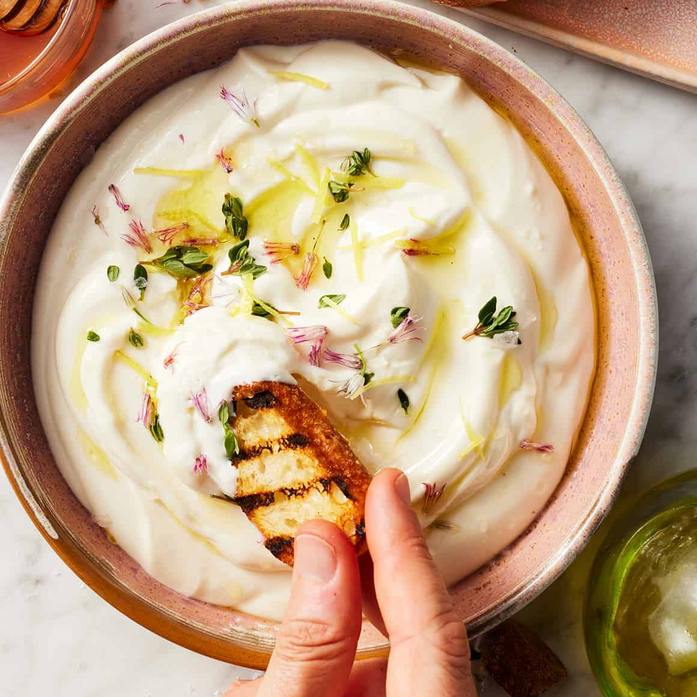

Whipped Ricotta Dip with Honey

Description
This dip is so great for sharing, and looks extra pretty topped with some
grapes and honey. It's also great with your favorite crackers or dippers.
Ingredients
- 16 ounces ricotta whole milk
- ½ cup parmesan finely grated
- 1 tablespoon olive oil plus additional for drizzling
- 1 tablespoon honey plus additional for drizzling
- 1 clove garlic minced
- 1 tablespoon thyme fresh, chopped, plus additional for topping
- ½ teaspoon kosher salt
- black pepper
- grapes halved, for topping
- honeycomb optional, for topping
- crackers, breadsticks, or sliced bread for serving
Steps
-
In a food processor, combine the ricotta, parmesan, olive oil, honey,
garlic, thyme, salt, and a pinch of pepper. Pulse until smooth and
creamy.
-
Drizzle with lime juice and oil and season with salt and pepper. Gently
toss to coat evenly.
-
Spread the whipped ricotta into a serving bowl and drizzle with
additional olive oil and honey, and top with halved grapes, honeycomb,
and additional thyme, salt, and pepper. Serve immediately with crackers,
breadsticks, or sliced bread.